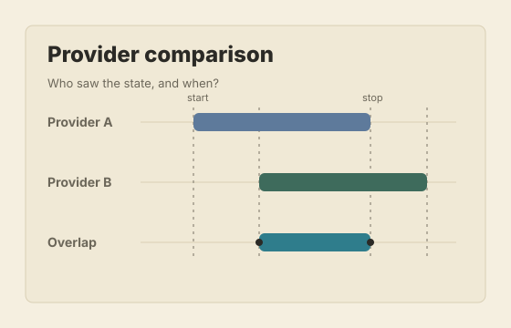
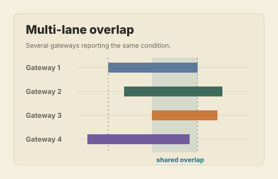
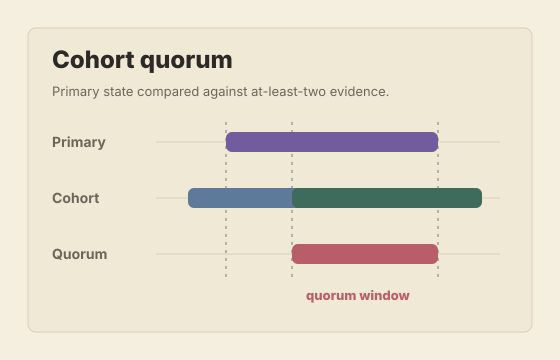
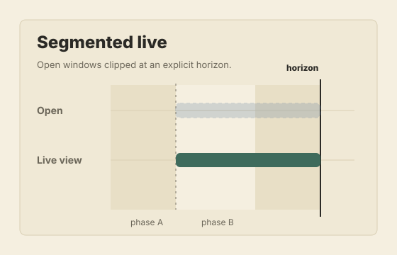

.NET CLI
dotnet add package Spanfold
dotnet add package Spanfold.TestingRecord when keyed state was active, then compare those windows across sources, providers, or pipeline stages. Use it when the latest value is not enough.
dotnet add package Spanfold
dotnet add package Spanfold.TestingInstall-Package Spanfold
Install-Package Spanfold.Testing<PackageReference Include="Spanfold" Version="0.1.0" />
<PackageReference Include="Spanfold.Testing" Version="0.1.0" />cd packages/python
python -m pip install -e ".[dev]"python -m pip install -e ./packages/python-e ./packages/pythonPython tracks the core API surface with idiomatic snake-case names.
Model
A temporal window is the period where a predicate stayed true for a key. Keep the lane, segment, and tag context with that range, then compare it without hand-written interval joins.
A latest-value table would only show online at the end. The window keeps the four-position offline span as the thing you can query, measure, and compare.
One comparison plan emits three row kinds at once. Residual is target-only, overlap is agreement, missing is against-only. Coverage, gap, containment, lead/lag, and as-of extend the same rows.
The horizon is the moment the live run asks its question. Rows derived from windows still open at that moment are provisional: they can change, and exports say so.
Problem
A current-state table can answer what is true now. It cannot answer when a state became true, which source saw it first, whether another source missed it, or what information was knowable at the decision point.
Keep the temporal record as data in application code. Persist it, compare it, export it, or render it as a debug artifact.
Use cases
Find where one provider reported an outage that another missed, reported late, or recovered from sooner.
Evaluate only the windows and annotations that were knowable at a specific processing position or timestamp.
Include still-open windows at a live horizon while keeping provisional rows separate from final rows.
Compare stages in a pipeline to see where state diverged, lagged, disappeared, or gained extra coverage.
Track periods where readings stayed above, below, or inside a range: 23.4 C, 23.5 C, 23.8 C.
Primitives
Visual Auditing
Export a self-contained HTML artifact when a row needs inspection: selected windows, aligned segments, gaps, and provisional live rows.

Provider comparison Six lanes with overlap, residual, missing, coverage, and live finality.
Multi-lane overlap Several gateways reporting staggered active windows.
Cohort quorum A primary lane compared against an at-least-two cohort.
Segmented live windows Phase and period segments with open windows clipped at a horizon.Code examples
dotnet add package Spanfold
dotnet add package Spanfold.Testing`Spanfold.Testing` is optional. It provides fixtures, snapshots, and assertions for consumer tests.
cd packages/python
python -m pip install -e ".[dev]"The Python package now tracks the C# core API surface with idiomatic snake-case names.
using Spanfold;
var pipeline = Spanfold.Spanfold
.For<DeviceSignal>()
.RecordWindows()
.TrackWindow(
"DeviceOffline",
key: signal => signal.DeviceId,
isActive: signal => !signal.IsOnline);
pipeline.Ingest(new DeviceSignal("device-17", false), source: "provider-a");
pipeline.Ingest(new DeviceSignal("device-17", true), source: "provider-a");
public sealed record DeviceSignal(string DeviceId, bool IsOnline);from dataclasses import dataclass
from spanfold import Spanfold
@dataclass(frozen=True)
class DeviceSignal:
device_id: str
is_online: bool
pipeline = (
Spanfold.for_events()
.record_windows()
.track_window(
"DeviceOffline",
key=lambda signal: signal.device_id,
is_active=lambda signal: not signal.is_online,
)
)
pipeline.ingest(DeviceSignal("device-17", False), source="provider-a")
pipeline.ingest(DeviceSignal("device-17", True), source="provider-a")var result = pipeline.History
.Compare("Provider QA")
.Target("provider-a", selector => selector.Source("provider-a"))
.Against("provider-b", selector => selector.Source("provider-b"))
.Within(scope => scope.Window("DeviceOffline"))
.Using(comparators => comparators
.Overlap()
.Residual()
.Missing()
.Coverage())
.Run();
result.ExportDebugHtml("artifacts/provider-qa.html");
result.ExportLlmContext("artifacts/provider-qa.llm.json");result = (
pipeline.history.compare("Provider QA")
.target("provider-a")
.against("provider-b")
.within(window_name="DeviceOffline")
.using("overlap", "residual", "missing", "coverage")
.run()
)
result.export_debug_html("artifacts/provider-qa.html")
result.export_llm_context("artifacts/provider-qa.llm.json")Boundaries
A database can persist windows, but it will not give you staged comparison plans, selectors, normalization, live finality, diagnostics, or deterministic exports by itself.
Latest-state tables answer what is true now. Window history answers when it was true, who saw it, and whether another lane missed it.
Stream processors route and aggregate events. This layer stays smaller: it records interpreted state windows and compares their temporal evidence.
Dashboards compress time into counters, rates, and charts. Window comparison keeps individual ranges and emits rows that can be audited.
Event sourcing preserves facts and rebuilds state. Window comparison analyzes the ranges produced after those facts have been interpreted.